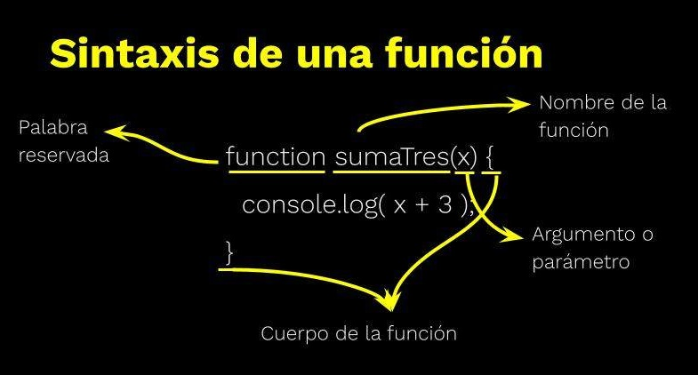

Funciones
¿Qué es una función?
Una función es un bloque de código reutilizable que realiza una tarea específica. Se pueden definir funciones para agrupar instrucciones y ejecutarlas cuando sea necesario.
Formas de crear funciones
En JavaScript hay tres formas de crear funciones:
- Declaración de función
- Expresión de función
- Función flecha (o arrow function)
JavaScript no cumple completamente con estos criterios. Aunque permite la creación de objetos y tiene características que pueden simular polimorfismo y encapsulamiento, no sigue una estructura de clases tradicional y la herencia se basa en prototipos en lugar de utilizar una sintaxis de herencia clásica como en Java o PHP.
Pregunta: ¿JavaScript es Orientado a Objetos o Basado en Objetos?
Respuesta